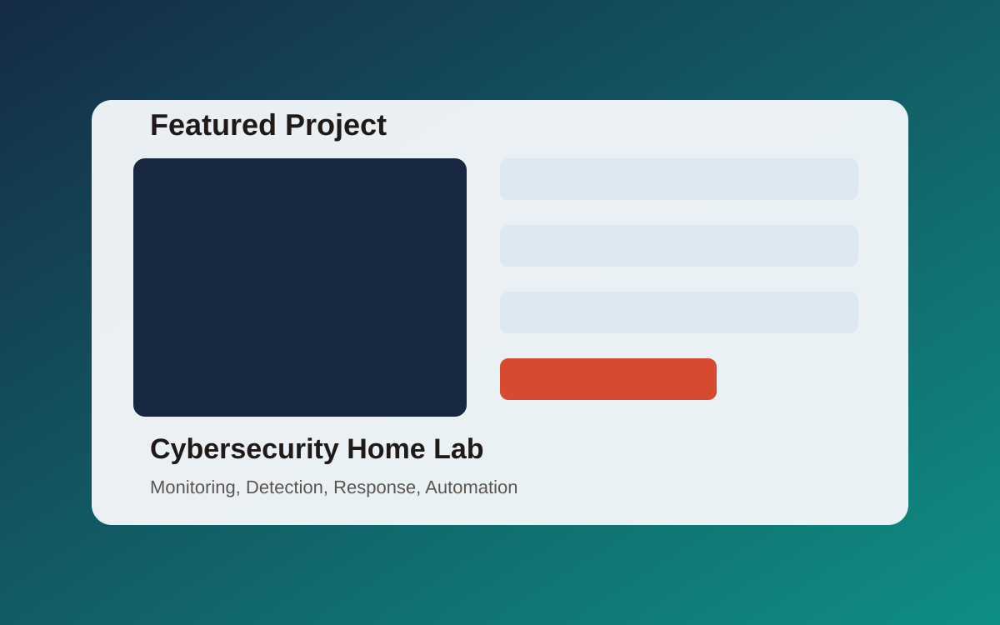
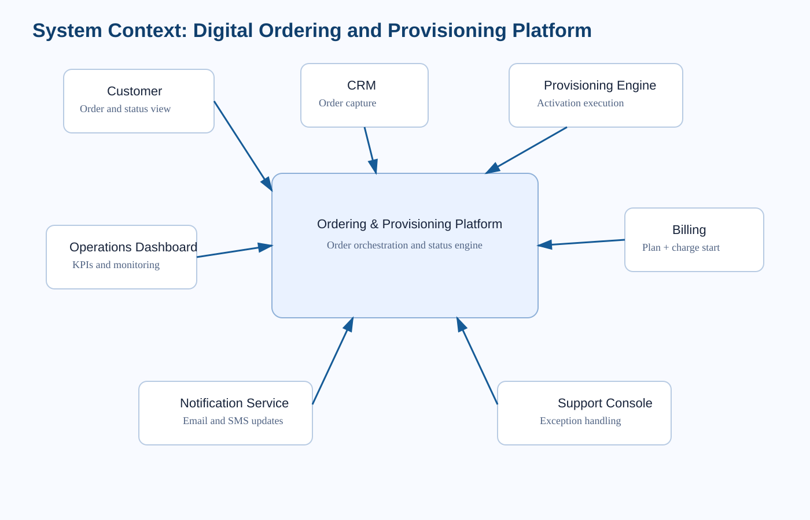
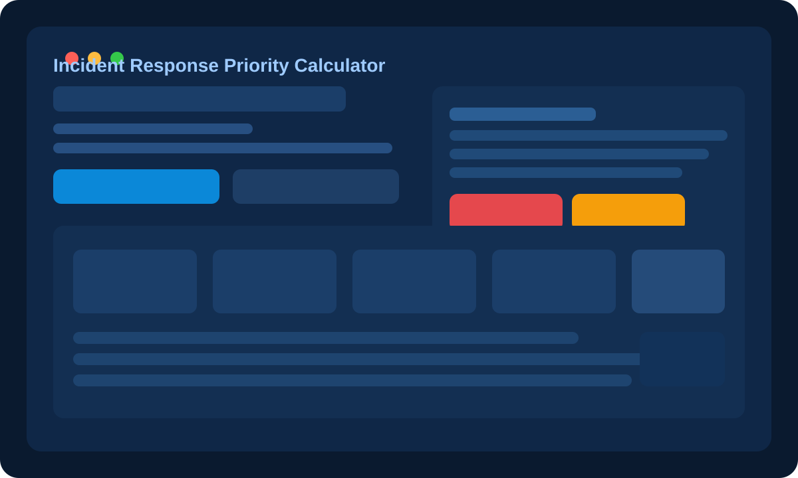
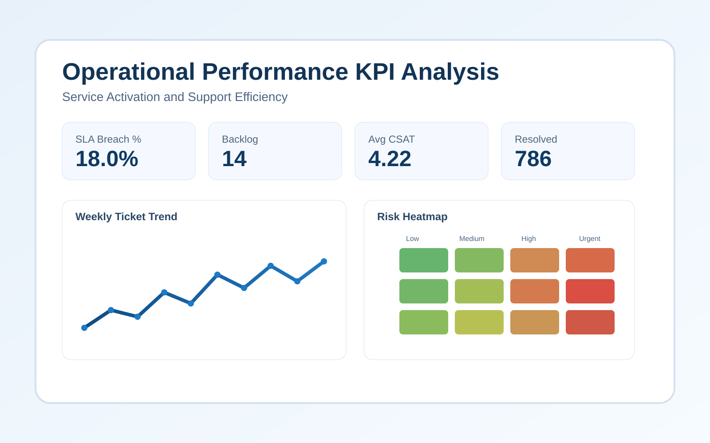

Systems Analysis
Telecom Operations
Digital Customer Service Ordering & Provisioning System
A systems analysis case redesigning telecom service ordering to reduce activation delays and eliminate duplicate data entry.
Demonstrates requirements engineering, process modeling, and integration design capability.
Focus: Telecom Operations, Systems Integration, Process Optimization
View Case Study
AS-IS / TO-BE Diagrams
Draw.io Source File
1-Page PDF Brief
Target impact (modeled): reduce activation cycle time by 20-30% and remove duplicate data entry across 3 teams.
Status: Completed (Analyst Portfolio Case)

Workflow Design
Healthcare Ops
Healthcare Appointment Scheduling & Intake Optimization
A systems analysis case redesigning healthcare appointment and intake workflows to reduce no-shows and shorten check-in delays.
Demonstrates repeatable analyst capability in requirements engineering, workflow modeling, and operational redesign.
Focus: Healthcare Operations, Process Modeling, KPI-Driven Optimization
View Case Study
AS-IS / TO-BE
Requirements
Target impact (modeled): lower no-show rate by 15-20% and cut average check-in time by 25%.
Status: Completed (Analyst Portfolio Case)

Cybersecurity
JavaScript Tool
Incident Response Priority Calculator
A practical SOC-style triage tool that calculates incident severity and recommends response actions based on threat type, business impact, and data sensitivity.
Stack: HTML, CSS, JavaScript
View Project Page
Live Demo
GitHub Repo
Status: Completed

SQL / KPI Analytics
Ops Reporting
Operational Performance KPI Analysis
Service Activation and Support Efficiency scenario focused on KPI visibility, operational risk detection, and leadership decision support.
Includes a Postgres synthetic dataset script, an analyst SQL pack, dashboard layout blueprint, and executive memo.
Focus: Operational Analytics, KPI Governance, Service Performance
View Scenario
KPI Dashboard
Insight Memo
Target impact (modeled): increase SLA adherence by 10-15% and reduce unresolved backlog volume by 20%.
Status: Completed (Analyst Portfolio Scenario)